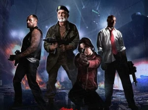
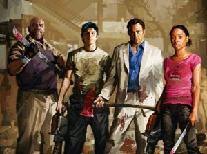

"That's right, we should call ourselves the Unstoppables!" ―Louis
"We're the four riders of the goddamn apocalypse!" -Nick
The Survivors are people in the world who have not contracted the Infection (either by virtue of being a carrier or possessing some form of immunity). The term, however, is commonly used to refer to the eight playable characters from the Left 4 Dead game series. Although the playable characters are immune, a comment by Bill suggests that they could become an Infected at any point. In addition, The Sacrifice comic presents the hypothesis that the Survivors are Carriers of the Infection―and as such are a positive danger to any uninfected humans they encounter.
In Left 4 Dead, it is never explained how the Survivors met up with each other, or how long they have been together (although judging by the timing given by the intro cutscene and The Sacrifice comic, it is less than 12 days by the start of the first campaign). At the start of the first campaign in Left 4 Dead 2, the playable characters have just met each other and do not even know each other's names. There are also non-playable Survivors that players will meet throughout the campaigns. In the comic, the Survivors are referred to as "Tango-Mike" (T-M in the NATO Alphabet) by the APC Driver, probably in reference to Typhoid Mary, the most notorious real-life carrier known in America.

The Left 4 Dead Survivors, from left to right: Francis, Bill, Zoey, and Louis in the No Mercy poster.

The Left 4 Dead 2 Survivors, from left to right: Coach, Ellis, Nick, and Rochelle in the Dead Center poster.
Each playable Survivor has their own unique appearance, personality, dialogue, and backstory, making them easier to identify at a distance. Players can choose which Survivor they control in the lobby, or be automatically assigned to a Survivor that is not being controlled by a player when they join a game that is already in progress. Every Survivor plays the same; their physical differences are purely cosmetic and do not alter gameplay. When controlled as AI Bots, Survivors will have preference over specific weaponry, and will attempt to choose that type if possible.
To portray their personalities, Valve used (perhaps deliberately and with tongue firmly in cheek) a standard screenwriter ploy to populate B-grade action, Western, sci-fi, sitcom, and costume drama scripts with characters that are instantly recognizable to "popcorn" audiences. This involves casting four main characters, each of whom have nothing much in common with one another but who are thrown together to face a challenge.
Each character is then assigned a stereotyped personality selected from four distinctive types:
- Cynic: self-centered, hostile, fires off put-downs and sarcasm, questionable morality, shady past, street or book smart. Francis and Nick.
- Optimist: moral, friendly, feelings trump facts, naive, does the right thing, loyal. Louis and Ellis.
- Realist: objective, lives by a personal code, disciplined, builds bridges, leadership role, adaptable. Often cast as The Hero. Bill and Coach.
- Apathetic: aloof, neutral, from a different social background, enigmatic, along for the ride, swept up in events, victim, suffers bravely, supporter, observer. Zoey and Rochelle.
Once introduced, the screenwriter finds it very easy to develop subplots and dialogue appropriate to these characters' personalities and their interactions with the environment and each other; Zoey's fourth wall breaching "zombie bullshit" elevator soliloquy and Ellis' asinine "Keith stories" are illustrative examples in this regard. Once set, the screenwriter is then also free to allow individual characters to mature (or regress―if a villain or coward is needed) as the plot unfolds. Valve induced precisely this type of personality metamorphosis in both volumes of Left 4 Dead. Most notably, in the wake of Bill's death, Zoey is made to "grow up" and thus take on marked aspects of his personality whilst Nick subtly loses much of his hard-shell cynicism. To maintain audience credibility, the screenwriter will not make wholesale personality changes to all leading characters, which is probably why Valve left the other Left 4 Dead persona untouched.
NOTE: Left 4 Dead Survivors appear in The Passing for Left 4 Dead 2, but are unplayable characters. As The Sacrifice DLC takes part in the story arc of Left 4 Dead, it is possible to play as the original Survivors in Left 4 Dead 2 due to the DLC being ported to Left 4 Dead 2 as well. They are also playable in the Left 4 Dead 2 ports of No Mercy and the other original campaigns since it is simply a retelling of the same events for Left 4 Dead. It is revealed in The Sacrifice comic that the Survivors are Carriers, and that they have been inadvertently transmitting the disease throughout Philadelphia.
Bill
Aged in his sixties, Bill is the oldest of all the Survivors. He is a Vietnam veteran who fought in the U.S. Army 1st Special Forces Group and his combat skills have helped to keep him alive. He wears an olive green military beret, a matching jacket with a stained white shirt underneath, dark gray-brown pants, and jungle boots. In official media, he is usually seen wielding the Assault Rifle―a weapon he prefers in-game and which complements his backstory. He and Francis appear to have a prickly relationship, often spewing insults or jokes at one another, but this may, in fact, be friendlier than what they let on. He always has a lit cigarette in his mouth. It is revealed in The Passing that Bill was killed prior to the bridge being raised during The Sacrifice, enabling the safety of the other Left 4 Dead Survivors. His body can be seen next to the generator in the final level of The Passing at The Port, alongside his signature Assault Rifle, which can be taken and used by the player. The events of his death are told in The Sacrifice comic. During the time of his life, Bill was the unofficial team leader, although his relationship with Francis was never easy whilst, towards the end and as revealed in The Sacrifice comic, the relationship shared with Zoey was placed under considerable strain. Bill is voiced by Jim French, who also voiced Father Grigori in Valve's Half-Life 2 and the Fisherman in Half-Life 2 Lost Coast.
Francis
Francis is a tough biker with tattoos covering his arms and neck. His tattoos identify him as a member of "Hell's Legion," a name possibly inspired by the real-world Hell's Angels Motorcycle Club. Since his character model was changed during development, it has been speculated that Francis' new face was modeled after the head developer of the game, Mike Booth. The Valve connection is strengthened by the fact that Francis has the Lambda symbol from the Half-Life series cut into his hair. He wears a black leather vest over a white tank top, fingerless gloves, black jeans, and boots. Valve commentary reveals that he is an impressive 6 feet 5 inches tall (195 cm). Francis has a self-centered personality that seems to resent aspects of Bill's leadership whilst treating Louis with an openly dismissive attitude at times. During development, his character was to have a love interest in Zoey, but this was dropped after play-testing and his relationship with her is now warm―if not neutrally platonic. In official media, he is usually seen wielding either the Pump Shotgun or the Auto Shotgun, and in-game, prefers those types of weapons. Francis is voiced by Vince Valenzuela.
 Francis
Francis
Louis
Louis' original concept was an assistant manager at a local retail electronics chain store. His design was later changed, and he was made a Junior Systems Analyst in his company's IT department. His clothing resembles that of a typical businessman, but seems to emulate Shaun from Shaun of the Dead, who wore a red tie and white shirt, and was an assistant manager at a local retail electronics chain store. He keeps the sleeves rolled up and the tie loose. His shirt has also become partially untucked. He wears dark gray, slightly torn pants with a black belt and black formal shoes. He also wears a black watch on his left wrist and is aged in his thirties.
In official media, he is usually seen wielding a Submachine Gun or dual Pistols. In-game, Louis prefers the Submachine Gun and Assault Rifle. At some point prior to The Passing in The Sacrifice comic, Louis was injured. According to The Sacrifice comic, his leg was damaged by Witches when he incautiously entered a sailboat occupied by them.
This recent injury renders him almost immobile and because of this, he uses a Heavy Machine Gun at the Port. Louis' character is upbeat and positive at all times towards his fellow Survivors―almost to an exaggerated degree. Bill seems to regard him with wry tolerance, Francis with open mocking indifference, whilst Zoey is the only one to treat him with genuine warmth―as she does with all her comrades.
Louis is voiced by Earl Alexander.
Zoey
Zoey was in her first year of college prior to the outbreak which makes her at least 18 years old―or slightly older depending on her college entry age. Her backstory reveals that she was ostensibly studying movie making on a scholarship, her parents were divorced and that she had a somewhat closer relationship to and more shared interests with her father―a city police officer. She wears a bright red track jacket over a white tank top, blue jeans, Converse shoes and keeps her hair tied up in a ponytail.
Her original design was based on Alesia Glidewell who previously worked with Valve on Portal as a model for the character Chell. However, when the character designs were updated later in development, Zoey was made to resemble actress/model Sonja Kinski instead. In official media, she is usually seen wielding dual Pistols. In-game, Zoey shows a preference for the Hunting Rifle. Zoey's character is that of a warm-hearted young woman with a marked dash of tomboy toughness. However, if someone dies, she becomes very emotional.
She is closest to Bill, who reciprocates with a protective father-daughter stance, but also reaches out to include (and thereby help bond) the other two Survivors into a comradely team. Initially, she is more of a follower, but during the events depicted in The Sacrifice comic and The Passing campaign, in the wake and shock of Bill's death, it is apparent that she has grown up fast and is taking on a leadership role in the group.
Zoey is voiced by Jen Taylor.
Left 4 Dead 2 Survivors
Coach
Main article: Coach is a forty-four year-old Physical Education teacher at the local high school in the town of Savannah―his home town. A prospective professional defensive linesman, a career-ending knee injury suffered at college led Coach to take up teaching as an alternative pathway into a possible pro-coaching football career. He wears a polo shirt in the yellow and purple colors of his high school employer, training gloves, beige slacks, and gray sneakers, as well as a gold chain necklace.
He is the oldest of the Left 4 Dead 2 group and serves in an unofficial capacity as its leader. He is a religious man, stopping the Survivors for a group prayer before entering Liberty Mall, and shows his weak point to be his stomach — always ready to stop when a food joint is nearby. In-game, he shows a preference for Tier 1 and Tier 2 shotguns, while in official media the Chainsaw appears to be his signature weapon.
Coach is voiced by Chad L. Coleman.
Ellis
Ellis is a twenty-three-year-old mechanic hailing from Savannah, similar to Coach. He wears a Bull-Shifter T-shirt, a white and blue cap, with a truck towing logo (that is also seen in the car alarm section in The Parish), half-removed coveralls with the sleeves tied around his waist, and black work boots.
Ellis appears to have a lack of comprehension of the seriousness of his current situation and retains a somewhat goofy personality in comparison to the other Survivors. Being the youngest of the group, Ellis has a naive, childish view of this new world, making him the "little brother" of the group. Ellis also has a love interest in Zoey when he first meets her in The Passing. In-game, Ellis has a preference for the Sniper and Hunting Rifle, while in official media, the Grenade Launcher appears to be his signature weapon.
Ellis is voiced by Eric Ladin.
Nick
In initial development, Nick was a thirty-five-year-old ex-prisoner who escaped in the wake of the Infection and celebrated his newfound freedom by stealing a white suit from a high-end retailer. He later developed into a shady con man and gambler drifting from city to city who bemoans his bad luck in happening to be passing through Savannah (and not Las Vegas) when the current crisis hit.
He wears an expensive white suit with a blue button-down shirt, several gold rings, and brown leather shoes. Nick holds negative and pessimistic views towards both the situation he has fallen into and the three strangers he is forced to join up with. Over time, despite his hard-boiled attitude towards his fellow Survivors, he softens and mellows as he increasingly learns to trust them. In-game, Nick shows a preference for Submachine Gun and Assault Rifle variant weaponry.
Nick is voiced by Hugh Dillon.
Rochelle
Rochelle is a twenty-nine-year-old minor associate producer for a news station with a high reputation, though her job had more to do with moving cables and coffee duties. She was in Savannah producing a segment about the evacuation center when the area became overrun with the Infected. She wears a pink T-shirt with a Depeche Mode logo, silver hoop earrings, blue jeans, a thin studded belt around her waist, two silver bracelets on her left arm and knee-high brown boots. She also keeps her hair tied in a bun.
Rochelle has the most realistic grasp of the situation and is very caring towards her fellow Survivors. Her and Francis show romantic interest in each other when they meet in the campaign The Passing. In-game, Rochelle has preferences similar to Nick; she prefers Submachine Gun and Assault Rifle variants.
Rochelle is voiced by Rochelle Aytes.